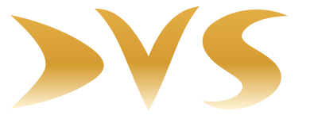

Comunicazione & PR
Consulenza, relazioni pubbliche e comunicazione per dare direzione e coerenza a ogni messaggio.

MEDIA & COMUNICAZIONEComunicazione, produzione audiovisiva e progetti multimediali per raccontare persone, idee e territori con chiarezza e carattere.
Un partner creativo per trasformare un’intuizione in un progetto chiaro, curato e capace di arrivare alle persone.
Consulenza, relazioni pubbliche e comunicazione per dare direzione e coerenza a ogni messaggio.
Ideazione e produzione di contenuti per video, cinema, radio e campagne pubblicitarie.
Progetti web e multimediali, eventi, incontri e iniziative culturali e commerciali.
Una selezione di produzioni e collaborazioni documentate. Il portfolio è pensato per accogliere nuovi lavori e materiali video.
Il documentario di Ugo Colista dedicato alla storia e alle persone dell’Aquila Rugby, presentato durante una commemorazione pubblica nel 2009.
Nel 2011 DVS Produzioni Televisive, diretta da Ugo Colista, collaborò con Onda TV per la trasmissione regionale dei playoff dell’Aquila Calcio.
Una collaborazione di Ugo Colista per il reperimento di immagini storiche, nell’ambito di un’iniziativa dedicata al Sei Nazioni e al patrimonio culturale.
Dalla postazione di controllo, immagini e segnali diventano una diretta da seguire in tempo reale. Uno sguardo al lavoro DVS durante una produzione sportiva sul campo.
Un percorso semplice aiuta a tenere insieme idea, persone e risultato.
Obiettivi, pubblico e materiali disponibili diventano il punto di partenza.
Si definiscono il messaggio, il formato e il tono più adatti.
Contenuti e attività prendono forma con attenzione ai dettagli.
Il progetto viene preparato per i canali e i pubblici previsti.
DVS è la sigla di una realtà indipendente con sede in Abruzzo e una vocazione che unisce media, comunicazione e cultura.
DVS di Ugo Colista opera nell’ambito delle pubbliche relazioni e della comunicazione. Le informazioni societarie pubbliche descrivono attività che spaziano dalla produzione audiovisiva alla creazione di siti e materiali multimediali, fino all’organizzazione di manifestazioni.
Ogni progetto comincia ascoltando. E prende forma con cura, visione e concretezza.
Parliamo del tuo progetto e troviamo insieme il modo giusto per farlo arrivare lontano.
+39 348 553 1979 · WhatsApp